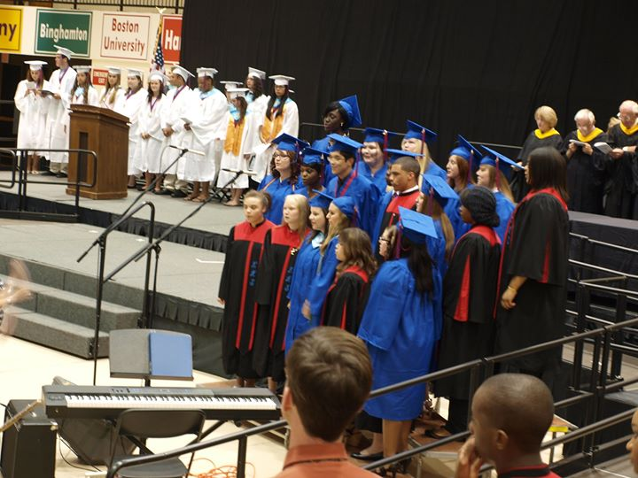
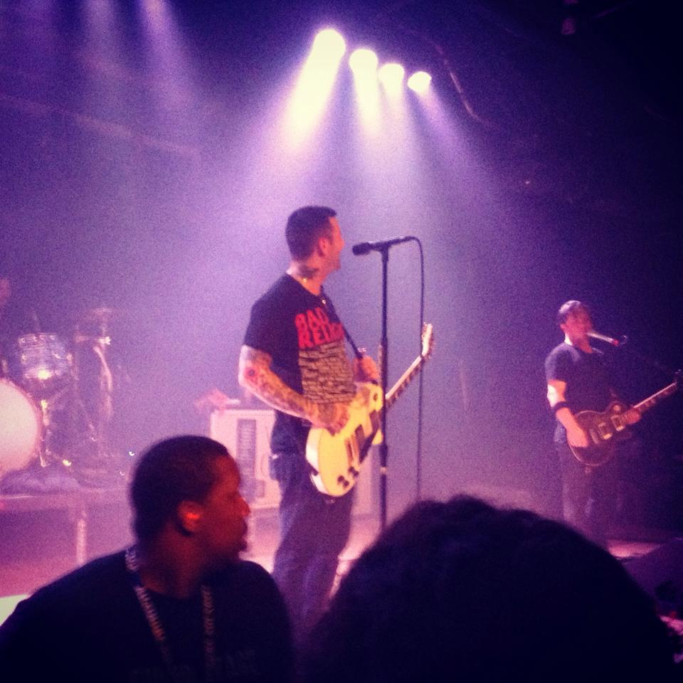

Music has always been a huge part of my life. I was in three different choirs throughout high shool, have been to many concerts, and listening to my Spotify playlists has become part of my daily routine.
Below I have listed some of my favorite genres, artists, and songs.
Genres
- Pop Punk
A sub-genre of rock music that is influenced by both pop music and punk rock.
Example artists: Blink-182, The Story So Far, The Wonder Years
- Synth Pop
A sub-genre of pop music that relies heavily on a synthesizer
Example Artists: Charli XCX, Depeche Mode, Uffie
- Contemporary R&B
Combines influences from R&B, pop, funk, hip hop, etc.
Example Artists: PnB Rock, Frank Ocean, Roy Woods
Artists
- Kim Petras
- Neck Deep
- Jordan Solomon
- Drake
- Charli XCX
- Bayside
- nothing,nowhere
- Lights

Songs
It's really difficult for me to pin down my favorites songs, so I'll just list the ones I'm really into at the moment:
- July - Noah Cyrus
- Unlock It - Charli XCX
- Tabs - Lights
- Back In My Arms - Carlie Hanson
- Call Back - nothing,nowhere
- Too Sad To Cry - Sasha Sloan
If you want to give them a listen, they're on this Spotify playlist